Кочетов Даниил
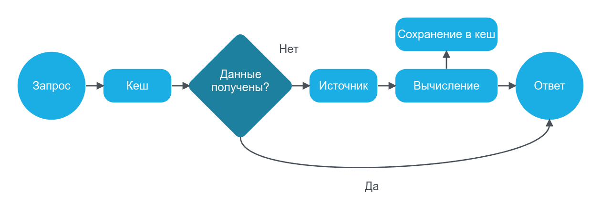
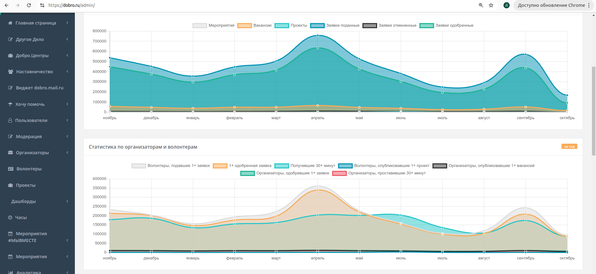
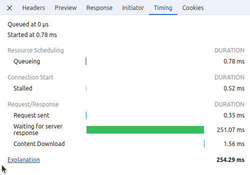
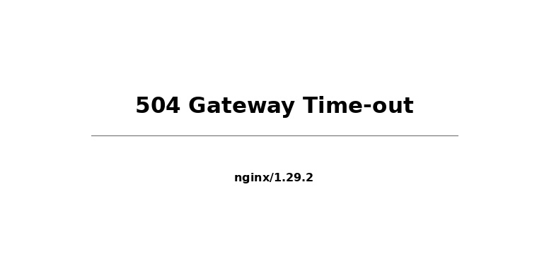
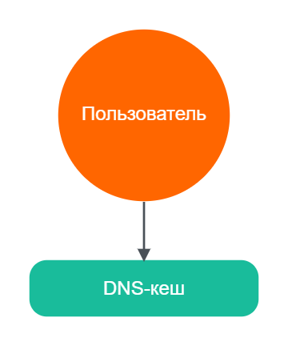
ipconfig /flushdnssudo killall -HUP mDNSRespondersudo systemd-resolve --flush-caches
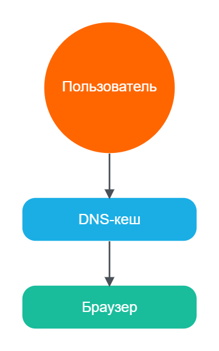
Ctrl+Shift+Delete (универсальное сочетание)Ctrl+F5 (жёсткое обновление страницы)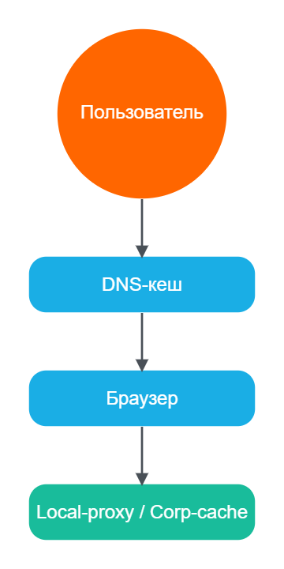
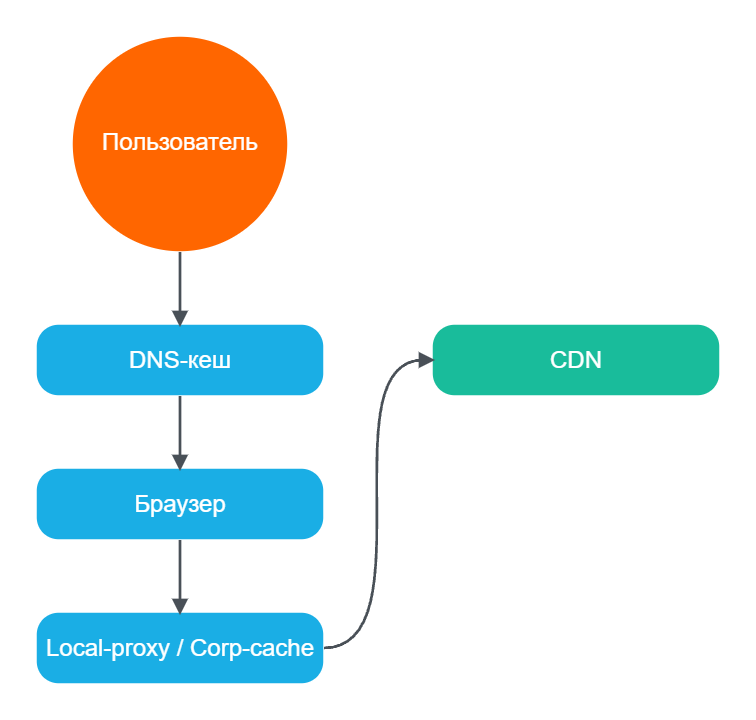
curl -X POST "https://api.cloudflare.com/client/v4/zones/{zone_id}/purge_cache"style.css?v=1.2.3
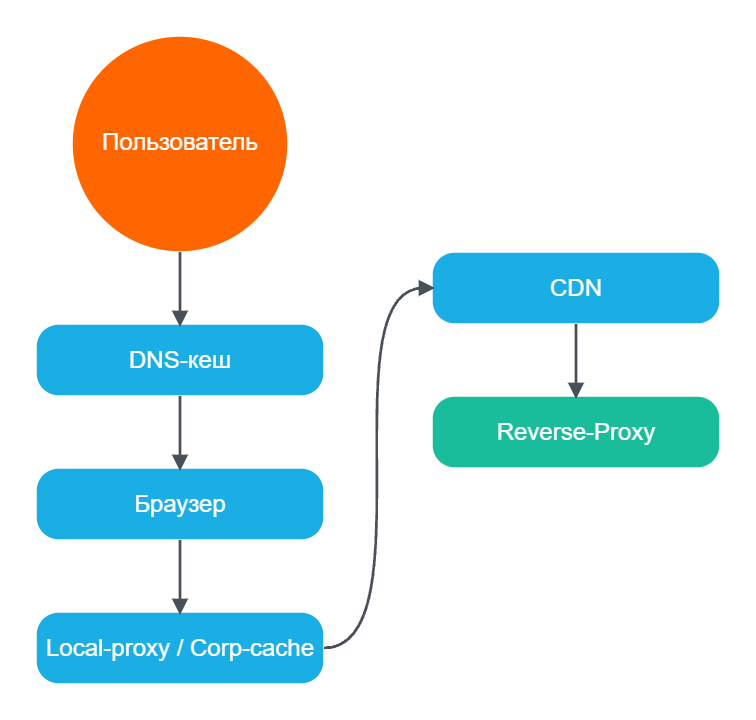
rm -rf /path/to/nginx/cache/*curl -X PURGE http://site.com/page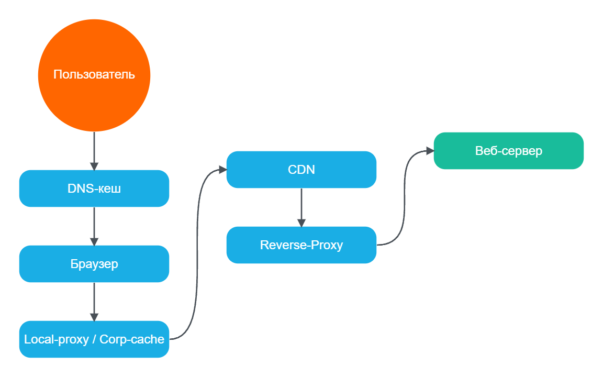
location ~* \.(jpg|jpeg|png|gif|ico|css|js|woff2?|ttf|svg)$ {
expires 30d;
add_header Cache-Control "public, max-age=2592000";
add_header Vary Accept-Encoding;
}
# Настройка зоны кеширования
proxy_cache_path /data/nginx/cache
levels=1:2
keys_zone=my_cache:100m
max_size=10g
inactive=60m;
location / {
proxy_pass http://backend;
proxy_cache my_cache;
proxy_cache_valid 200 302 10m;
proxy_cache_valid 404 1m;
add_header X-Proxy-Cache $upstream_cache_status;
}
rm -rf /data/nginx/cache/*curl -X PURGE http://site.com/page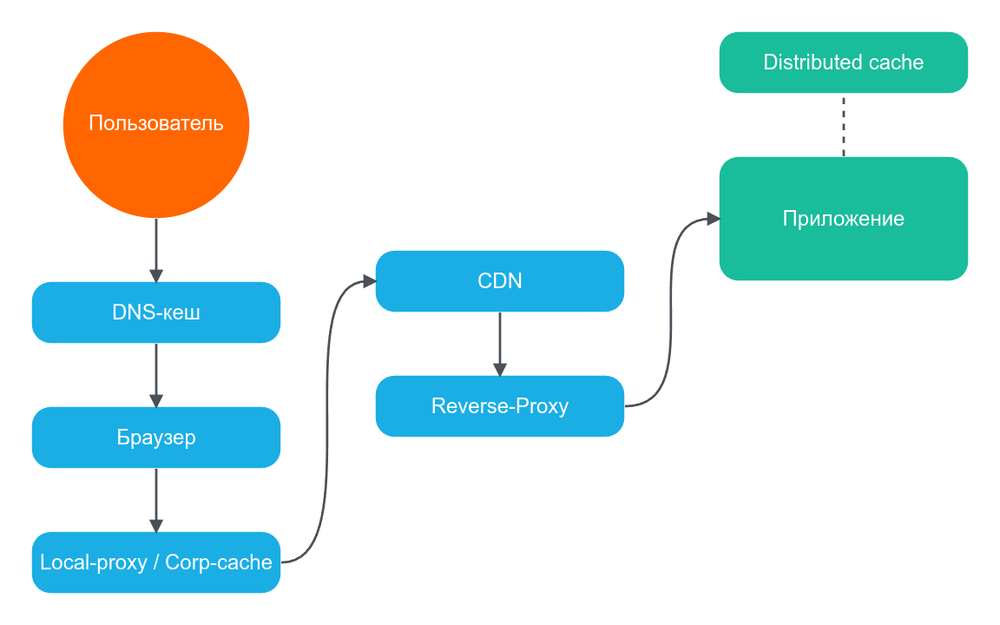
use Bitrix\Main\Data\Cache;
use Bitrix\Main\Application;
$cache = Cache::createInstance();
$tagCache = Application::getInstance()->getTaggedCache();
if ($cache->startDataCache(3600, 'products_5', '/products/')) {
$tagCache->startTagCache('/products/');
$tagCache->registerTag('iblock_id_5');
$tagCache->registerTag('category_electronics');
$tagCache->endTagCache();
$items = getProducts(5);
$cache->endDataCache($items);
}
// Инвалидация
$tagCache->clearByTag('category_electronics');
use Bitrix\Main\Data\Cache;
$cache = Cache::createInstance();
$cacheId = 'external_api_data';
$cacheDir = '/api/external/';
if ($cache->initCache(3600, $cacheId, $cacheDir)) {
$result = $cache->getVars();
} elseif ($cache->startDataCache()) {
$result = callExternalAPI();
$cache->endDataCache($result);
}
// Ручная очистка
$cache->clean($cacheId, $cacheDir);
// В .settings.php
'composite' => [
'enabled' => true,
'use_browser_cache' => true,
'auto_update' => true,
],
use Bitrix\Main\Composite\Page;
use Bitrix\Main\Context;
// Исключение блока из кеша
$frame = $this->createFrame()->begin();
echo Context::getCurrent()->getUser()->getFullName();
$frame->end();
// Очистка кеша
Page::getInstance()->deleteAll();
use Bitrix\Main\Application;
Application::getInstance()->getIncludeAreaComponent(
"bitrix:news.list",
"template_name",
[
"IBLOCK_ID" => 1,
"CACHE_TYPE" => "A", // N, Y, A (авто)
"CACHE_TIME" => 3600,
"CACHE_GROUPS" => "Y",
]
);
// Очистка кеша компонента
\CBitrixComponent::clearComponentCache("bitrix:news.list");
use Bitrix\Iblock\ElementTable;
$items = ElementTable::query()
->setSelect(['ID', 'NAME', 'IBLOCK_ID'])
->where('IBLOCK_ID', 5)
->where('ACTIVE', 'Y')
->setCacheTtl(3600) // Вот тут устанавливается
->cacheJoins(true)
->fetchAll();
// Автоматическая очистка при обновлении
ElementTable::getEntity()->cleanCache();
use Bitrix\Main\Data\Cache;
use Bitrix\Main\Data\CacheManager;
// Очистка кеша меню
CacheManager::get()->cleanDir("menu");
// Очистка всех управляемых кешей
CacheManager::get()->cleanAll();
// Очистка кеша шаблонов компонентов
Cache::clearCache(true, "/");
// Очистка кеша настроек
Cache::createInstance()->cleanDir("/options/");
use Bitrix\Main\Data\Cache;
use Bitrix\Main\Application;
// По ключу
Cache::createInstance()
->clean($cacheId, $dir);
// По директории
Cache::createInstance()
->cleanDir($dir);
// По тегу
Application::getInstance()
->getTaggedCache()
->clearByTag('iblock_id_2');
use Bitrix\Iblock\ElementTable;
use Bitrix\Main\Composite\Page;
// Для ORM сущности
ElementTable::getEntity()
->cleanCache();
// Композитный кеш
Page::getInstance()
->deleteAll();
// Html кеш страницы
Page::getInstance()
->delete('/catalog/item/123/');
php bin/console cache:clear (текущее окружение)php bin/console cache:clear --env=prodphp bin/console cache:warmup (прогрев)rm -rf var/cache/* (полная очистка)
use Symfony\Component\HttpFoundation\Response;
public function index(): Response
{
$response = $this->render('page/index.html.twig');
// Public cache с max-age
$response->setPublic();
$response->setMaxAge(3600);
$response->setSharedMaxAge(3600);
// ETag для валидации
$response->setETag(md5($response->getContent()));
return $response;
}
use Symfony\Contracts\Cache\CacheInterface;
use Symfony\Contracts\Cache\ItemInterface;
public function __construct(private CacheInterface $cache) {}
public function getProducts(): array
{
return $this->cache->get('products_list', function (ItemInterface $item) {
$item->expiresAfter(3600); // TTL 1 час
return $this->productRepository->findAll();
});
}
// Очистка пула
$this->cache->delete('products_list');
use Symfony\Contracts\Cache\TagAwareCacheInterface;
public function __construct(
private TagAwareCacheInterface $cache
) {}
public function getProductsByCategory(int $categoryId): array
{
return $this->cache->get("products_cat_{$categoryId}",
function (ItemInterface $item) use ($categoryId) {
$item->tag(['products', "category_{$categoryId}"]);
$item->expiresAfter(3600);
return $this->productRepository->findByCategory($categoryId);
}
);
}
// Инвалидация всех продуктов категории
$this->cache->invalidateTags(['category_5']);
// Result Cache
$query = $em->createQuery('SELECT p FROM App\Entity\Product p');
$query->enableResultCache(3600, 'products_all');
$products = $query->getResult();
// Second Level Cache (L2)
// config/packages/doctrine.yaml
doctrine:
orm:
second_level_cache:
enabled: true
region_cache_driver:
type: redis
id: 'doctrine.cache.redis'
use Doctrine\ORM\Mapping as ORM;
#[ORM\Entity]
#[ORM\Cache(usage: "READ_ONLY", region: "products")]
class Product
{
#[ORM\Id]
#[ORM\Column(type: "integer")]
private int $id;
#[ORM\Column(type: "string")]
private string $name;
}
// Очистка L2 Cache
$cacheDriver = $em->getConfiguration()->getResultCacheImpl();
$cacheDriver->deleteAll();
# config/packages/framework.yaml
framework:
validation:
cache: validator.mapping.cache.symfony
cache:
pools:
validator.mapping.cache.symfony:
adapter: cache.adapter.redis
default_lifetime: 3600
php bin/console cache:pool:clear validator.mapping.cache.symfony
# config/packages/cache.yaml
framework:
cache:
app: cache.adapter.redis
default_redis_provider: 'redis://localhost'
pools:
app.cache.products:
adapter: cache.adapter.redis
default_lifetime: 3600
tags: true
app.cache.sessions:
adapter: cache.adapter.memcached
provider: 'memcached://localhost'
app.cache.expensive:
adapter: cache.adapter.filesystem
default_lifetime: 86400
php bin/console cache:pool:clear app.cache.productsphp bin/console cache:pool:list$cache->invalidateTags(['products', 'category_5']);php bin/console doctrine:cache:clear-queryphp bin/console doctrine:cache:clear-resultphp bin/console doctrine:cache:clear-metadata
revalidateTag('users')revalidatePath('/dashboard')router.refresh() (клиент)
async function getData() {
const res = await fetch('https://api.example.com/data')
return res.json()
}
// В одном рендере:
const data1 = await getData() // запрос отправляется
const data2 = await getData() // берётся из кеша (HIT)
// Кешировать ответ (по умолчанию в Next.js 14)
fetch('https://...', { cache: 'force-cache' })
// Не кешировать (по умолчанию в Next.js 15)
fetch('https://...', { cache: 'no-store' })
// Кешировать с ревалидацией каждые 60 секунд
fetch('https://...', { next: { revalidate: 60 } })
// С тегами для групповой инвалидации
fetch('https://...', { next: { tags: ['users'] } })
import { revalidateTag, revalidatePath } from 'next/cache'
revalidateTag('users')
revalidatePath('/dashboard')
// API Route пример
export async function POST() {
await updateUser()
revalidateTag('users')
return Response.json({ success: true })
}
// layout.tsx или page.tsx
'use cache'
export default async function Page() {
const users = await fetch('/api/users').then(r => r.json())
return {users.map(u => {u.name}
)}
}
'use client'
import { useRouter } from 'next/navigation'
export function RefreshButton() {
const router = useRouter()
return <button onClick={() => router.refresh()}>Обновить</button>
}
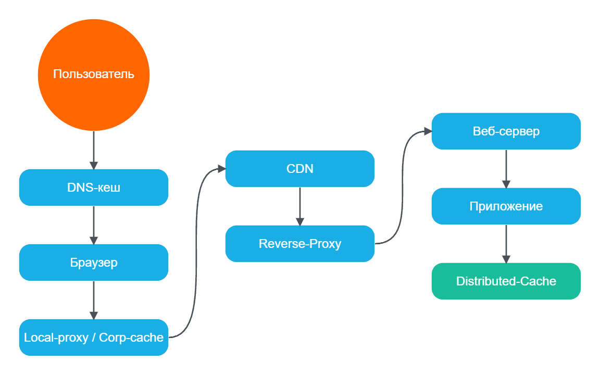
# Очистка всего кеша
redis-cli FLUSHALL
# Очистка конкретной базы
redis-cli FLUSHDB
# Удаление по паттерну
redis-cli --scan --pattern "user:*" | xargs redis-cli DEL
# Очистка по тегам (в приложении)
redis-cli DEL tag:users tag:products
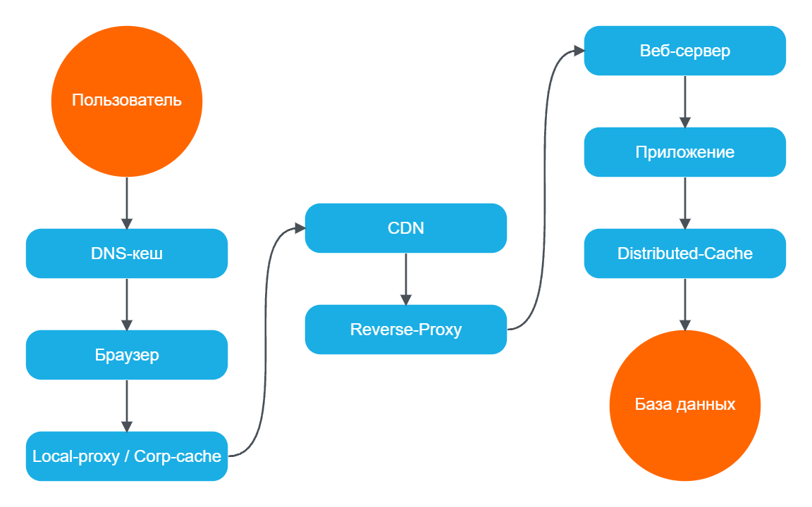
nslookup возвращает результат мгновенноipconfig /displaydns (Windows)dscacheutil -cachedump -entries Host (macOS)200 (from disk cache) или (from memory cache)304 Not Modified при ревалидации(disk cache) или (memory cache)If-None-Match, If-Modified-SinceCache-Control, ETag, Last-ModifiedAge: 0 при свежем кеше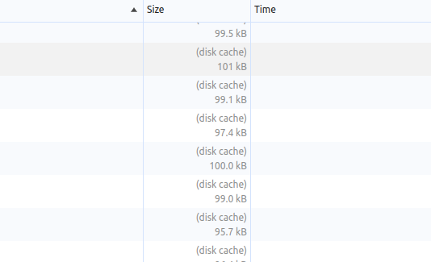
X-Cache: HIT / MISS / BYPASSX-Cache-Status: HIT (Cloudflare, Fastly)CF-Cache-Status: HIT (Cloudflare)X-Served-By: cache-fra19121-FRAAge: 1234 — возраст кеша в секундахAge растёт между запросамиcurl -I https://site.com/style.cssX-Proxy-Cache: HIT / MISS / EXPIREDX-Cache-Status: $upstream_cache_statusAge: секундыX-Varnish: 123456 789012 (HIT если 2 числа)X-Cache: HITVia: 1.1 varnishlocation / {
proxy_pass http://backend;
proxy_cache my_cache;
proxy_cache_valid 200 10m;
# Добавляем заголовок статуса кеша
add_header X-Proxy-Cache $upstream_cache_status always;
add_header X-Cache-Key $scheme$proxy_host$request_uri;
# HIT, MISS, EXPIRED, STALE, UPDATING, REVALIDATED, BYPASS
}
# В логах
log_format cache_log '$remote_addr - $upstream_cache_status [$time_local] '
'"$request" $status';
<!-- COMPOSITE_CACHE -->BX_COMPOSITE_CACHEX-Bitrix-Composite: Cache (200)/bitrix/cache/define("LOG_CACHE", true);$cache->initCache() возвращает trueX-Symfony-Cache: GET /: freshAge: секунды — возраст кешаX-Content-Digest: хешMONITOR в реальном времениlogger с каналом 'cache'$item->isHit()redis-cli MONITOR — все команды в реальном времениredis-cli INFO stats → keyspace_hits/missesredis-cli --stat — метрики каждую секундуGET key проверка конкретного ключаecho "stats" | nc localhost 11211get_hits / get_misses — счётчикиcurr_items — количество ключейevictions — вытеснения из-за нехватки памятиcurl -I -H "Cache-Control: no-cache" URL